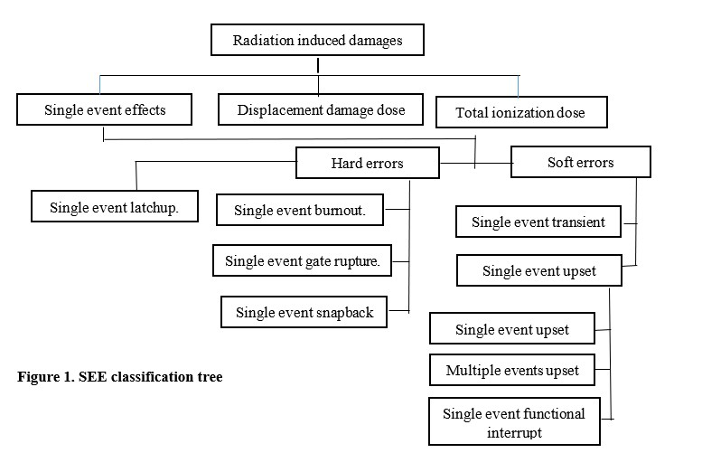

2D 버스 기반 멀티코어부터 TSV 기반 3D NoC 매니코어까지, 현대 고성능 프로세서의 신뢰성을 위협하는 결함 모델과 그 대응 전략을 총망라한 종합 서베이 논문이에요.
현대 반도체 공정의 미세화와 함께 프로세서 집적도가 폭발적으로 증가하면서, 단일 칩 내에 수십에서 수백 개의 코어를 통합하는 멀티코어 및 매니코어 아키텍처가 고성능 컴퓨팅의 주류로 자리잡았어요. 그러나 트랜지스터 크기가 나노미터 수준으로 줄어들수록, 방사선 입자(중성자, 알파 입자 등)에 의한 소프트 에러, 제조 결함에 의한 하드 결함, 그리고 노화로 인한 점진적 열화 등 다양한 신뢰성 위협 요인들이 동시에 급증하고 있어요. 특히 우주 방사선 환경이나 지표면 중성자 플럭스에 노출되는 시스템에서는 단일 이벤트 업셋(SEU)이나 단일 이벤트 과도(SET) 같은 방사선 유발 오류가 시스템 전체의 정확성과 신뢰성을 심각하게 위협할 수 있어요.
3D 적층 집적 기술, 특히 TSV(Through-Silicon Via) 기반의 3D NoC(Network-on-Chip) 구조는 페타스케일 컴퓨팅을 위한 고대역폭, 저지연 상호연결 솔루션으로 주목받고 있어요. 하지만 TSV 자체도 제조 수율 문제, 기계적 스트레스, 전기적 결함 등 고유한 신뢰성 취약점을 가지고 있어요. 또한 SRAM 기반 FPGA는 빠른 프로토타이핑과 재구성 가능성 덕분에 탄력적 시스템 개발에 널리 활용되지만, 방사선에 취약한 구성 비트들로 인해 별도의 오류 완화 전략이 반드시 필요해요. 이처럼 다층적인 신뢰성 문제를 체계적으로 이해하고 해결하기 위한 통합적 관점의 연구가 절실히 요구되는 상황이에요.
로직 계층의 CMOS/FPGA 오류 완화부터 마이크로아키텍처의 버스 기반 멀티코어 내결함성, 그리고 TSV 기반 3D NoC 매니코어의 라우터 및 상호연결 결함 허용까지, 서로 분산되어 연구되어 온 결함 모델과 대응 기법들을 단일 프레임워크 내에서 계층별로 통합 정리하는 것이 이 논문의 핵심 출발점이에요. 이를 통해 설계자들이 시스템 수준의 신뢰성 전략을 수립하는 데 필요한 포괄적 지식 기반을 제공하고자 해요.
이 논문은 결함 분석을 논리(Logic) 계층, 마이크로아키텍처(Micro-architecture) 계층, 아키텍처(Architecture) 계층의 세 단계로 구분하여 체계적으로 접근해요. 논리 계층에서는 방사선에 의한 SEU, SET, SEFI(Single Event Functional Interrupt) 등의 소프트 에러 메커니즘을 정의하고, 디지털 CMOS 설계와 SRAM 기반 FPGA에 적용 가능한 TMR(Triple Modular Redundancy), EDAC(Error Detection and Correction) 코드, 회로 강화(Hardening) 기법 등의 오류 완화 방법을 비교 분석해요. CMOS SRAM 구조가 디지털 CMOS 설계와 FPGA 양쪽에 공통적으로 사용된다는 점에 착안하여, FPGA 기반의 탄력적 프로토타이핑을 통해 CMOS 설계 검증을 가속화하는 방법론도 제시해요.
마이크로아키텍처 및 아키텍처 계층에서는 2D 버스 기반 멀티코어 시스템의 오류 감지 및 복구 메커니즘을 다루고, 이어서 TSV 기반 3D NoC 시스템으로 논의를 확장해요. TSV 결함 모델로는 개방 결함(Open Fault), 단락 결함(Short Fault), 저항성 결함(Resistive Fault) 등을 분류하며, 각 결함 유형에 대응하는 탄력적 3D 라우터 설계 기법과 경로 재구성(Rerouting) 알고리즘을 소개해요. 매니코어 시스템 수준에서는 하드웨어 중복(Hardware Redundancy), 자가 진단(Self-Test), 분산 진단(Distributed Diagnosis) 기법들을 체계적으로 검토하며, 각 기법의 오버헤드와 효율성을 비교해요.
이 논문의 가장 큰 기여는 서로 다른 추상화 계층(로직→마이크로아키텍처→아키텍처)과 서로 다른 물리적 구현 방식(2D 버스 기반→TSV 3D NoC)에 걸친 결함 모델 및 내결함성 기법들을 하나의 통일된 분류 체계로 정리했다는 점이에요. 특히 TSV 고유의 결함 특성이 3D NoC 라우터 및 링크 신뢰성에 미치는 영향을 구체적으로 매핑함으로써, 3D 집적 시스템 설계자들이 수율과 신뢰성을 동시에 고려한 설계 결정을 내릴 수 있는 실용적 가이드라인을 제공해요.
논문은 기존 내결함성 기법들이 2D 평면 구조에 최적화되어 있어 3D TSV 기반 시스템에 그대로 적용하기 어렵다는 중요한 격차를 확인했어요. TSV의 결함율은 제조 공정 성숙도에 따라 크게 달라지며, 특히 초기 공정에서는 일반 금속 배선 대비 높은 결함 밀도를 보여 3D NoC 전체 수율에 결정적인 영향을 미쳐요. SRAM 기반 FPGA에서의 구성 비트 오류는 단순 로직 오류를 넘어 라우팅 변경까지 유발할 수 있어, 주기적인 스크러빙(Scrubbing)과 부분 재구성(Partial Reconfiguration)을 결합한 동적 오류 복구 전략의 중요성이 강조되었어요. 또한 매니코어 시스템에서 분산 진단 기법은 중앙집중식 방법 대비 진단 지연과 통신 오버헤드를 크게 줄일 수 있음을 여러 기존 연구들이 공통적으로 시사하고 있어요.
HBM 및 고대역폭 메모리 인터페이스 설계자 입장에서 이 논문은 매우 직접적인 시사점을 제공해요. HBM은 본질적으로 TSV를 통해 DRAM 다이를 수직으로 적층하는 3D 집적 구조이기 때문에, 이 논문이 다루는 TSV 결함 모델(개방, 단락, 저항성 결함)과 수율 분석은 HBM 인터포저 및 스택 설계에 직접 적용 가능한 지식이에요. 특히 TSV 저항성 결함은 신호 무결성 저하와 타이밍 위반으로 이어질 수 있으며, 이는 HBM의 고속 데이터 전송(예: HBM3의 경우 핀당 6.4Gbps 이상) 환경에서 더욱 치명적인 오류로 발전할 수 있어요. 따라서 HBM 설계 시 TSV 테스트 구조 삽입과 내장 자가 테스트(BIST) 회로를 통한 사전 결함 스크리닝이 필수적임을 이 논문은 간접적으로 뒷받침해요.
SRAM 기반 구조는 HBM 내의 모드 레지스터(Mode Register)와 캐시 구조에도 활용되므로, 이 논문이 다루는 SRAM 소프트 에러 완화 기법(EDAC, 스크러빙)은 HBM 컨트롤러 설계에도 중요한 참고 자료가 돼요. 또한 3D NoC의 탄력적 라우터 설계 개념은 HBM의 채널 리던던시(Column Redundancy, Row Redundancy) 및 포스트 패키지 리페어(PPR) 메커니즘과 설계 철학을 공유해요. 수율 관점에서, TSV 결함이 HBM 스택 전체의 수율 킬러(Yield Killer)로 작용할 수 있다는 점을 고려하면, 결함 허용 라우팅과 유사한 개념의 TSV 리던던시 설계와 결함 맵핑(Defect Mapping) 전략이 HBM 생산 수율 향상에 핵심적인 역할을 할 수 있어요.
이 논문은 서베이 성격상 특정 기법의 정량적 성능 데이터나 실리콘 검증 결과를 직접 제시하지 않아, 실제 HBM 또는 3D 집적 시스템 설계에 바로 적용하기 위해서는 각 인용 논문을 원문으로 추가 확인해야 해요. 또한 2022년 기준의 문헌을 다루고 있어 HBM3E, HBM4 등 최신 세대 메모리나 최첨단 TSV 공정(예: 하이브리드 본딩)에서 발생하는 새로운 결함 메커니즘은 충분히 반영되지 않을 수 있으므로, 최신 공정별 결함 특성 연구를 병행하여 참조하는 것이 중요해요.
